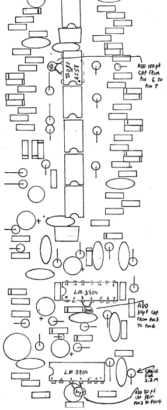

CHANGES FOR VC WAVE MULTIPLIER The following components will reduce some of the noise and high frequency oscillations which tend to show up occasionally on the wave pc board. 1. Add 150 pF capacitor to pins 6 and 7 of second IC from top (TL082 or RC4558, directly under top trim pot). 2. Add 30 pF capacitor to pins 2 and 4 of bottom IC (LM3900). 3. Add 30 pF capacitor to pins 2 and 4 of second IC from bottom (LM3900). 4. Check bottom right stand-up resistor for a value of 2.2M (Red-Red-Green-Gold). Some models may have a 22M in its place (Red-Red-Blue-Gold). Solder the resistors onto the bottom of the PC boards on the foil traces connected to the pins of the ic"s. be carefull to avoid using excess solder or shorting out any of the traces with solder bridges. Pins of the IC's are numbered in a counter-clockwise direction as viewed from the top. Pin 1 is near the small indented dot. Pin 2 is directly below it.
|